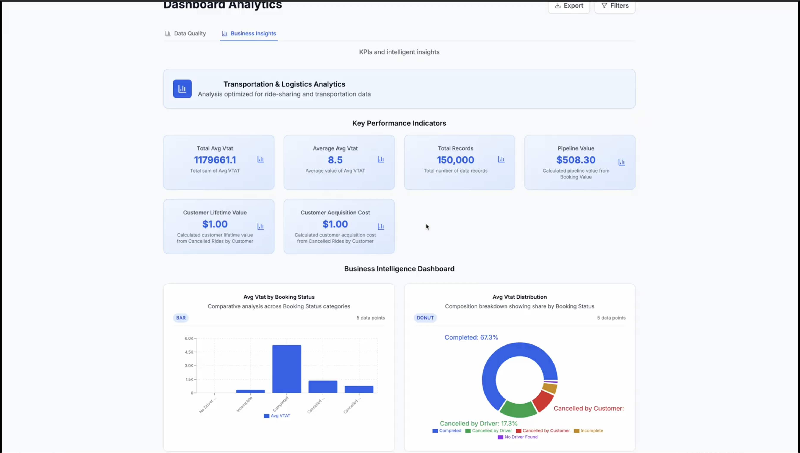
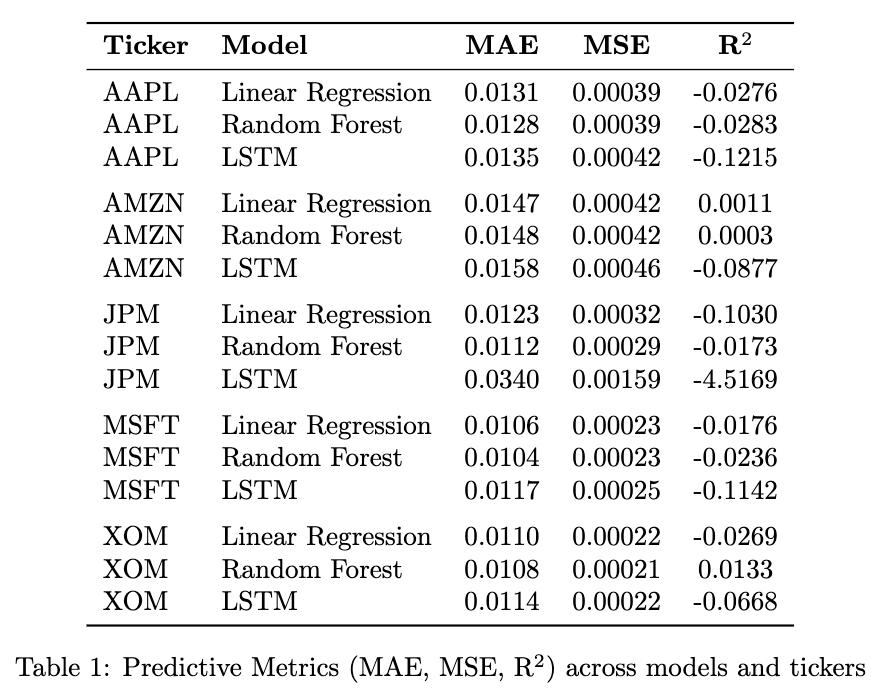
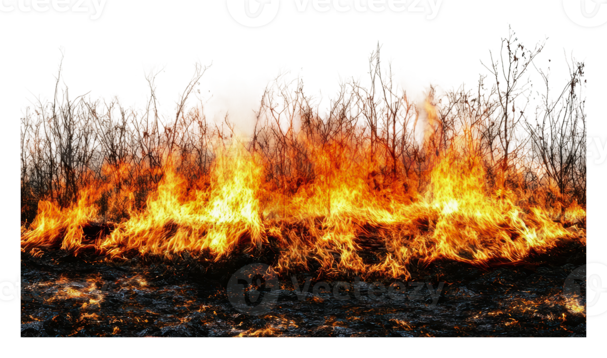
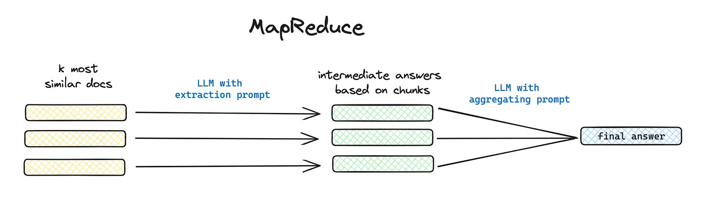
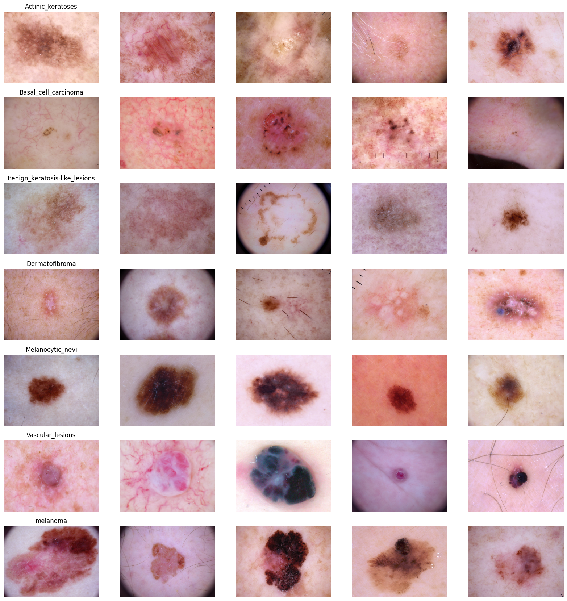
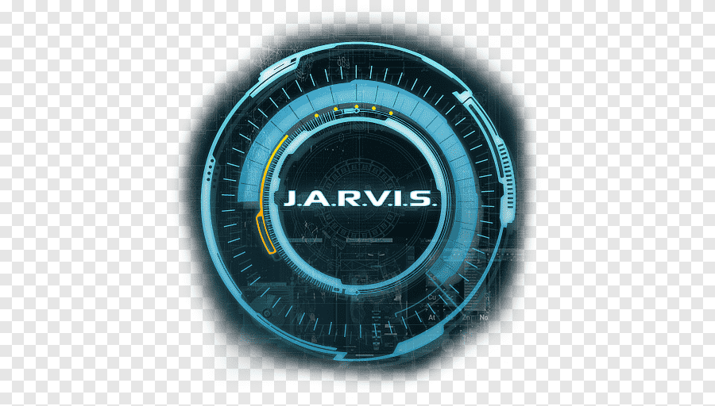
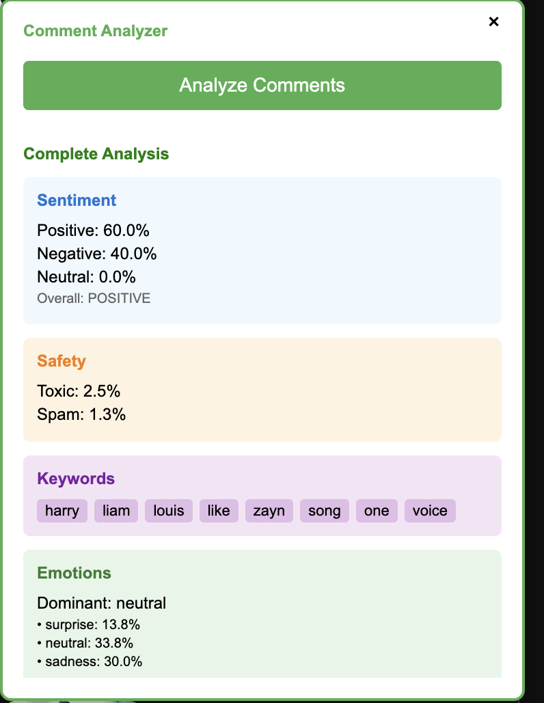
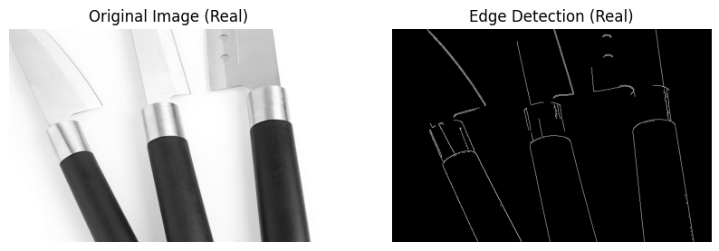

About Me
I'm an M.S. Data Science researcher at Fordham University with a unique foundation: I don't just build AI systems I understand them from first principles. My work spans interpretable diffusion models, multimodal emotion recognition, and training paradigms without backpropagation, alongside enterprise-grade multi-agent systems and production ML infrastructure.
My research philosophy: Before scaling AI, understand why it works. I've reproduced cutting-edge architectures (NoPropDT achieving 99% accuracy without gradient descent), designed reasoning-aware diffusion systems that expose internal decision processes, and built robust multimodal models that intelligently handle sensory failures work that bridges experimental innovation with real-world reliability.
My engineering impact: From research to production, I architect systems that deliver measurable value. I've engineered autonomous bug-fixing agents with RAG and MongoDB (90% debugging time reduction), built AI-powered BI platforms using CrewAI (80% manual reporting time saved), and deployed graph-based navigation systems with Neo4j and OpenAI. I've also worked as a Data Consultant optimizing SQL queries on Amazon Redshift (40% faster retrieval) and automating ETL workflows with DBT, bringing both analytical rigor and production expertise.
Current Research Focus
Diffusion Detective: Reasoning-Guided Interpretability
Integrating chain-of-thought (CoT) supervision with Stable Diffusion to make image generation interpretable. Designing compact reasoning-aware architectures that generate explicit reasoning traces before synthesis, enabling users to visualize and edit the model's decision steps. Bridging multimodal reasoning frameworks (CoT-VLA, UniFusion) with diffusion modeling for transparent AI creativity.
Robust Multimodal Emotion Recognition
Building emotion recognition systems that mimic human intuition trusting vision when audio is corrupted by noise. Combining audio, video, and text models with a self-correcting "reliability filter" that detects sensor failures and shifts attention to clear signals. Engineering real-world robustness for autonomous vehicles and service robotics.
Experience
From research labs to production systems building AI that works in the real world
Teaching Assistant
Fordham University · New York, NY
Teaching graduate-level courses in Data Mining (Fall 2025) and Machine Learning for Finance (Spring 2026). Leading weekly office hours, providing 1:1 mentoring on research projects, and delivering guest lectures on advanced ML topics including classification, clustering, and financial modeling techniques.
Graduate Research Assistant
Fordham University · New York, NY
Leading MAESTRO project: Developed a multimodal learning platform generating lecture videos via OpenAI (script synthesis), PlayHT (neural voice), and FFmpeg (video rendering). Integrated retrieval-augmented QA bots using LangChain and OpenAI embeddings for interactive learning.
Current research: Engineering novel few-shot 2D-3D reconstruction pipelines on medical imaging data (OASIS dataset), exploring efficient neural representations for sparse-view medical volumetric reconstruction.
Associate Data Consultant
Decision Foundry · Bangalore, India
Designed and automated ETL workflows using DBT and Tableau Prep, cutting processing time by 30% and boosting data accuracy. Optimized complex SQL queries on Amazon Redshift, reducing retrieval time by 40% for 1TB+ datasets. Delivered 25+ interactive dashboards in Tableau and Salesforce CRMA, accelerating stakeholder reporting by 20%.
Undergraduate Research Assistant
Jain University · Bangalore, India
Designed deep learning pipelines for medical imaging tasks, including multiclass skin lesion detection with CNNs achieving 85% validation accuracy. Collaborated with faculty on published research addressing toxic language detection and medical AI applications.
Featured Research
Published work in diffusion models, neural rendering, and AI systems

Featured Projects
Enterprise AI systems demonstrating technical depth and business impact

AutomatedBI – AI-Powered BI Dashboard Generator
Enterprise platform using CrewAI and Gemini to transform raw data into interactive dashboards. 80% reduction in manual reporting time.

Causal Factor Discovery in S&P 500 Returns
End-to-end pipeline using Double Machine Learning for uncovering causal market relationships. Deep learning for financial forecasting.

H-KFX: Autonomous Bug-Fixing Agent
Autonomous AI agent with GPT-4o, MCP, and MongoDB RAG. 90% reduction in debugging time with automated code fixes.

Wildfire Intelligence Dashboard
Real-time ML dashboard for wildfire prediction with NASA FIRMS-style detection. Processes 1M+ geospatial data points.

MAESTRO: AI Text-to-Video Lecture System
Full-stack text-to-video generation platform for educational content. Automated lecture synthesis with LangChain pipelines.

RamsNavigator: AI Campus Navigation
Hybrid Neo4j + MongoDB system with OpenAI for natural language indoor navigation and intelligent pathfinding.

Diffusion Detective: Interpretable Stable Diffusion
Interpretable AI system with real-time attention extraction. Full-stack FastAPI backend and React frontend.

No-Propagation Diffusion Transformers
Reproduced NoPropDT architecture from scratch. 99% accuracy on MNIST without backpropagation.

Skin Disease Detection: Multi-Model CNN Ensemble
Transfer learning system with multiple pre-trained CNNs. 85% validation accuracy for medical diagnosis.

YJarvis: AI Voice Assistant for YouTube
Chrome extension with whistle activation and GPT-powered summarization. <2s latency.

YouTube Comment Analyzer
NLP tool for analyzing YouTube comments with sentiment analysis and engagement insights.

AI Image Detector: Deepfake Detection
Computer vision system for detecting AI-generated, deepfake, and synthetic images.
Let's Work Together
Available for Spring 2025 Internships and Full-time Roles (May 2026)
Career Opportunities
Seeking roles in AI Engineering, Data Science, and ML Research. Specialized in production systems, multi-agent workflows, and quantitative finance.
Research Collaboration
Open to collaborating on impactful projects in LLMs, generative AI, and enterprise AI systems.
Speaking & Workshops
Available for talks and workshops on AI, machine learning, and production ML systems.